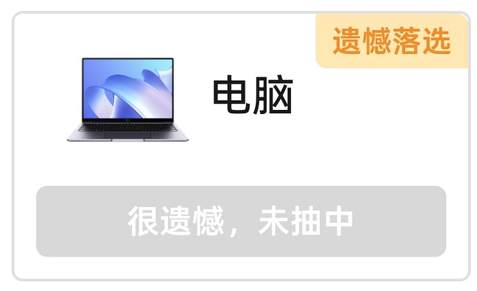
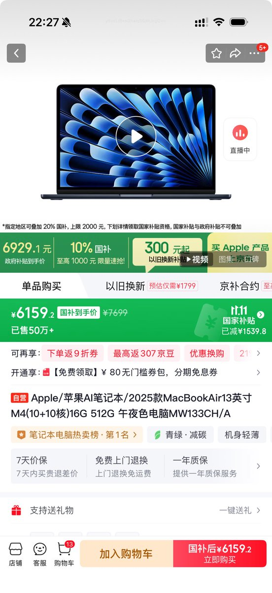
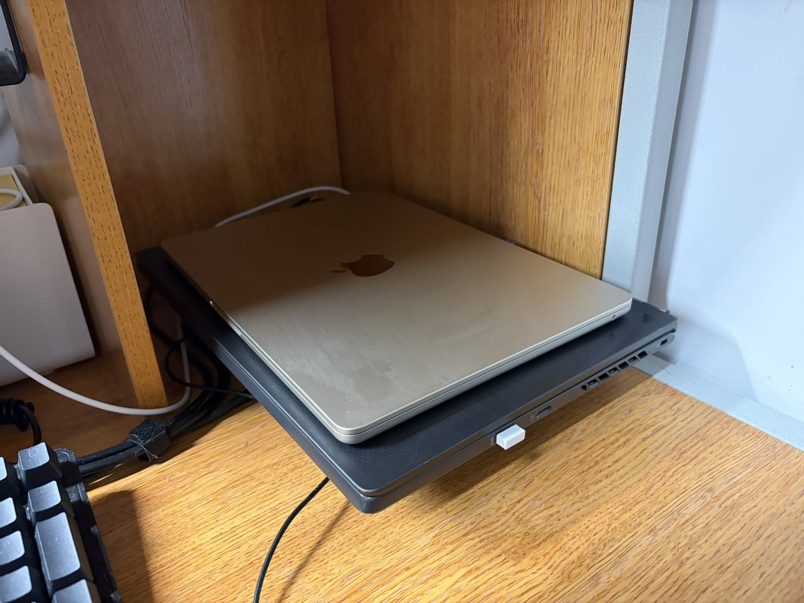

空光
@Vo1dLight
@KafuuChinoDL @xbanboo 这国补到底是谁在中🤡



智乃
@KafuuChinoDL
@xbanboo 上周蹭国补买了一个16+512的Macbook，6000块钱的MBA还是16+512，我做梦都不敢想😂。
16+256的更是不到5000，感觉Win轻薄本瞬间毫无性价比了。
甚至有的省市还对24+512的M2 MacBook 13进行补贴，只要5000左右。 https://t.co/qbdFCx2OMr